Jeg bygger enkle, morsomme og ubrukelige produkter.
Hei, jeg er Espens assistent. Motvillig.
Prosjekter
Småprosjekter bygget for moro skyld. Noen er nyttige, andre løser ingenting. Bla sidelengs for flere, repo og demo på hvert kort.
-
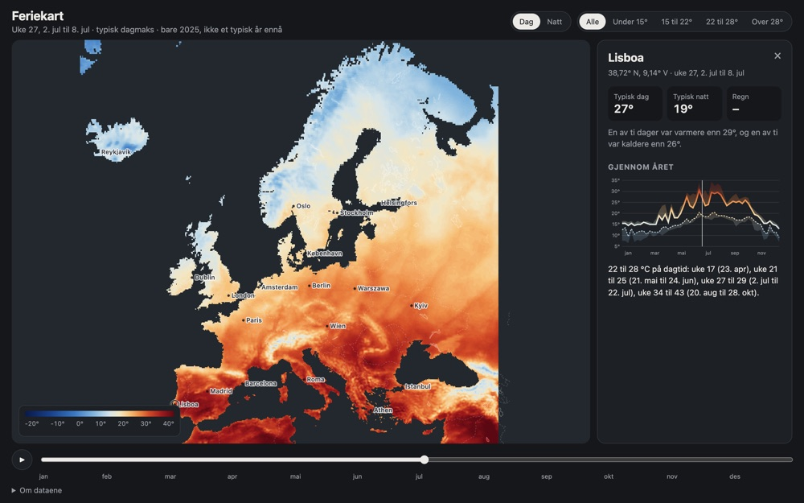
Feriekart
Hvor pleier det å være 25 grader i uke 40? Tjue år med døgntemperaturer fra hele Europa, uke for uke, fra mørk blå til mørk rød.
Klimadata: inneholder bearbeidet informasjon fra Copernicus Climate Change Service, ERA5-Land, CC BY 4.0. Verken EU-kommisjonen eller ECMWF er ansvarlig for bruken.
Python, Canvas, ERA5-Land Privat verktøy -
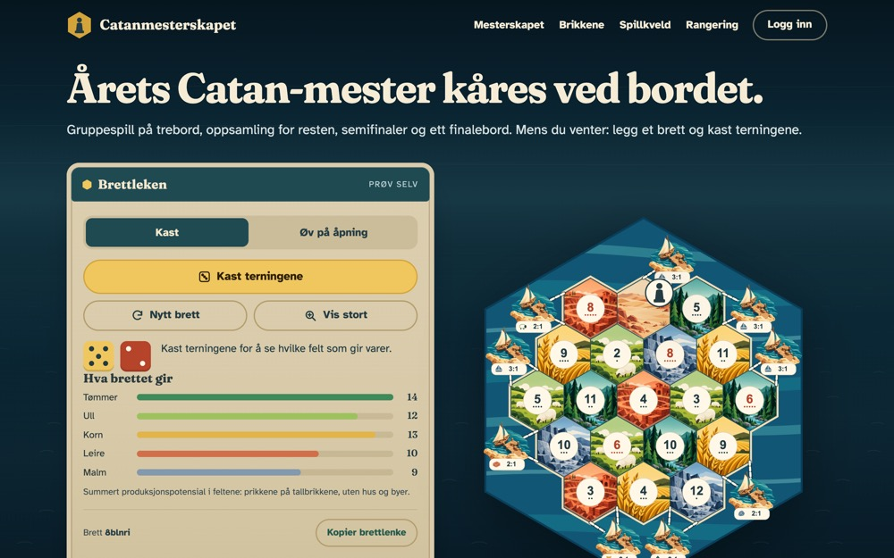
Catanmesterskapet
Vennegjengens årlige Catan-mesterskap, fra påmelding til finalebord. Alle bordene får samme brett, telefonene teller poengene, og storskjermen viser tabellen mens klokka går.
JS, Cloudflare Workers, D1 Nettside -
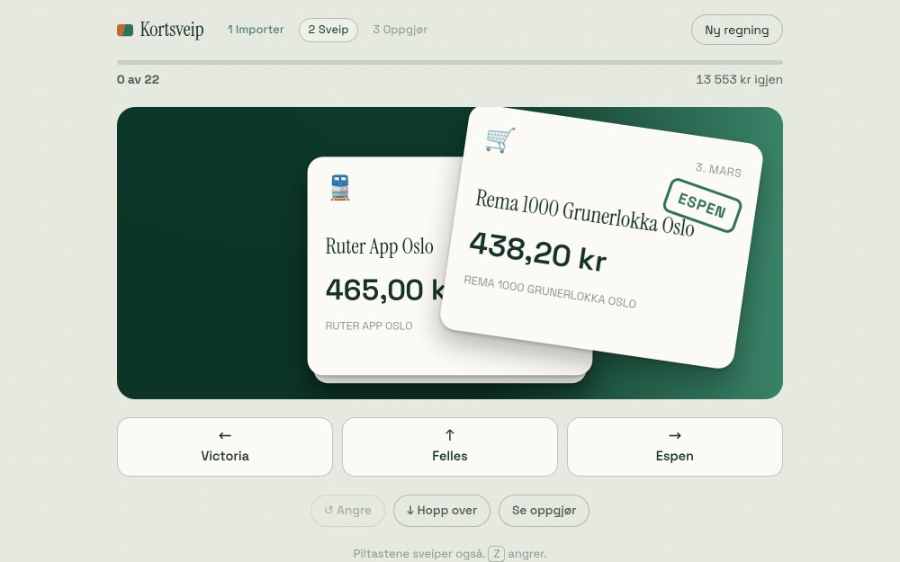
-
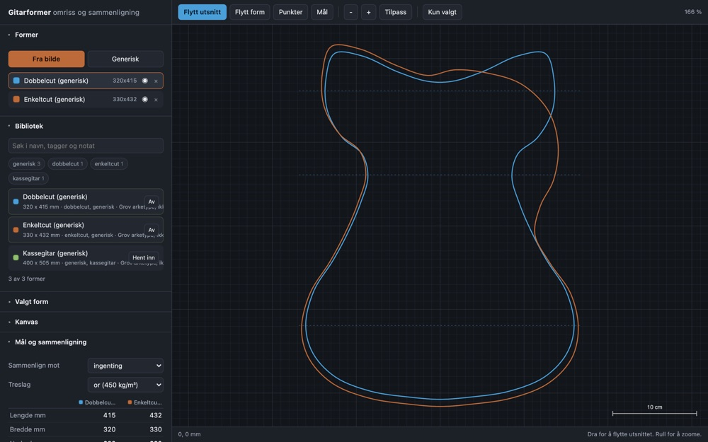
-
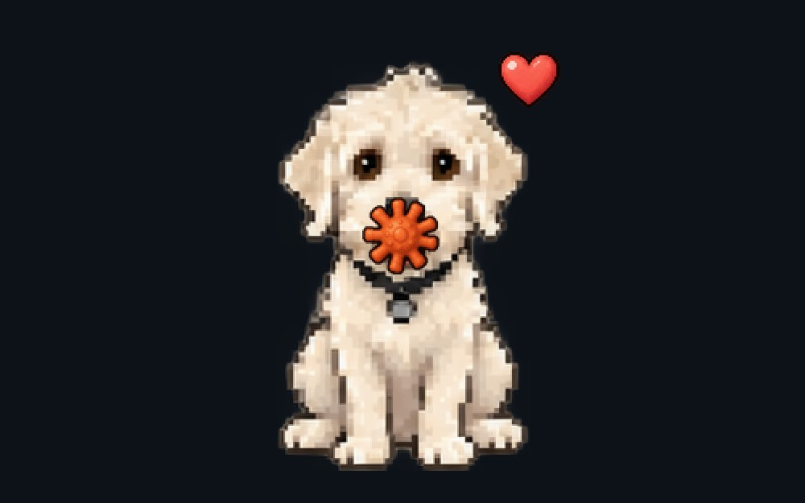
Pikselhund
Hunden vår som pikselfigur på skrivebordet. Holder leka til den av Claude og ChatGPT som har mest kvote igjen. Egentlig bare laget for gøy, men så utviklet det seg til noe nytt og nyttig, og gir meg overraskende mye glede.
Swift, macOS Repo -
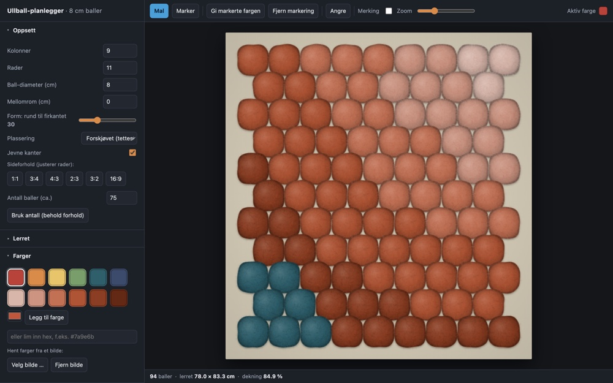
-
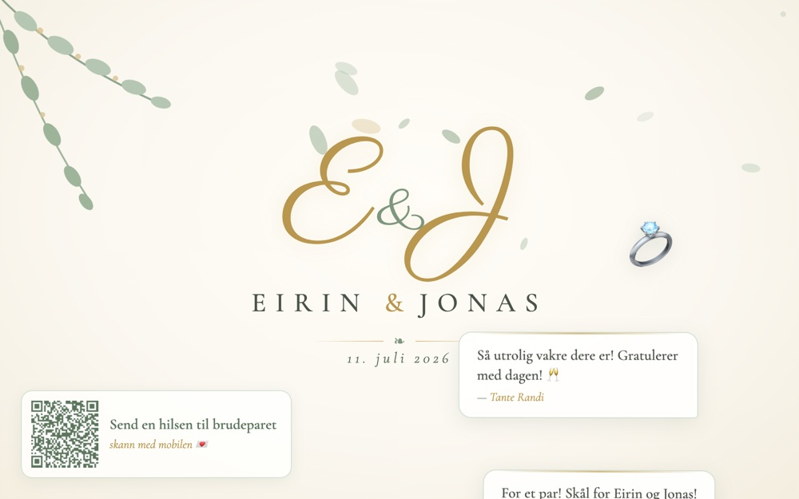
-
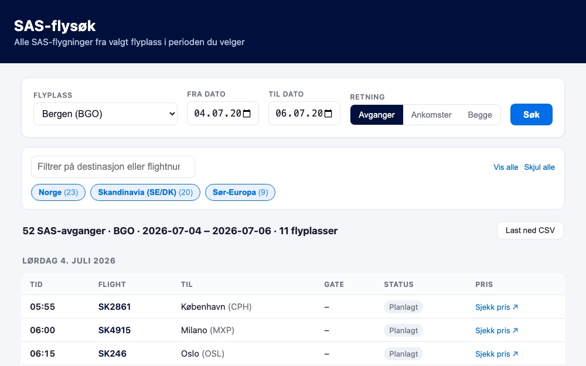
-
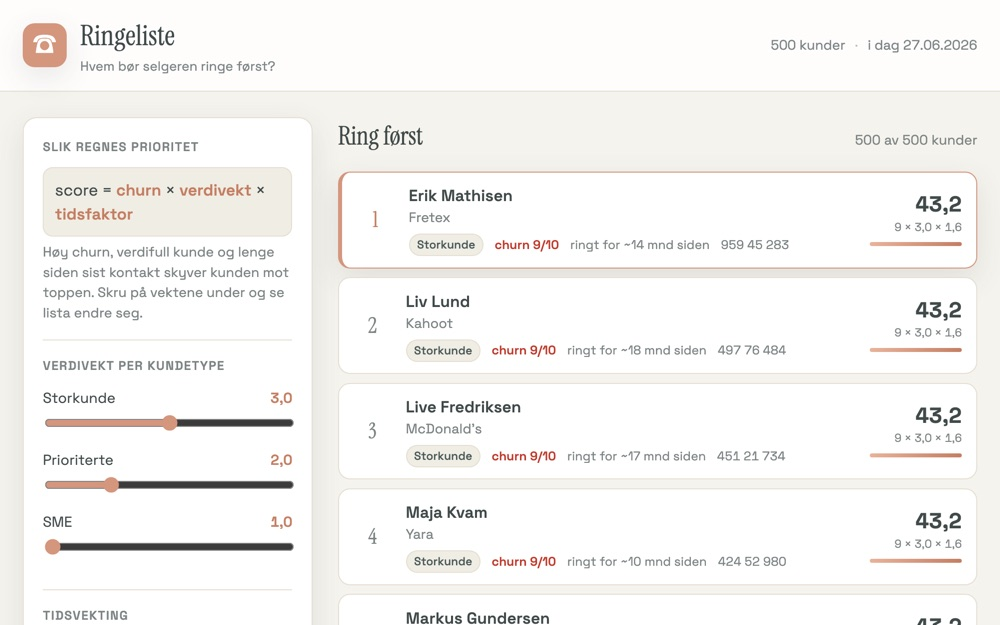
-
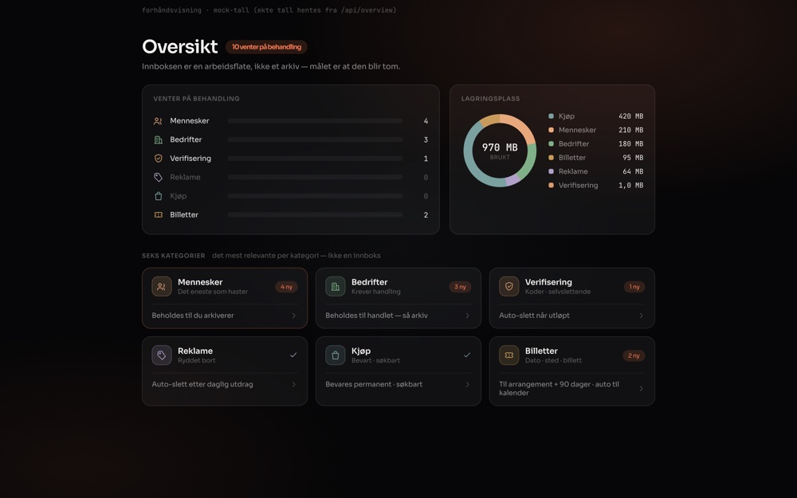
-
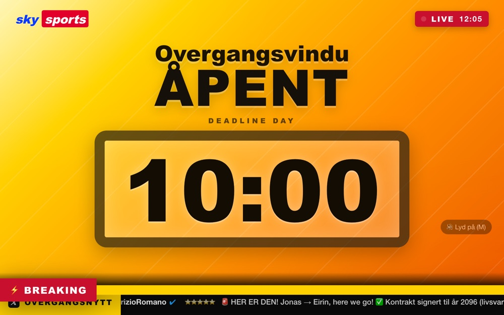
-
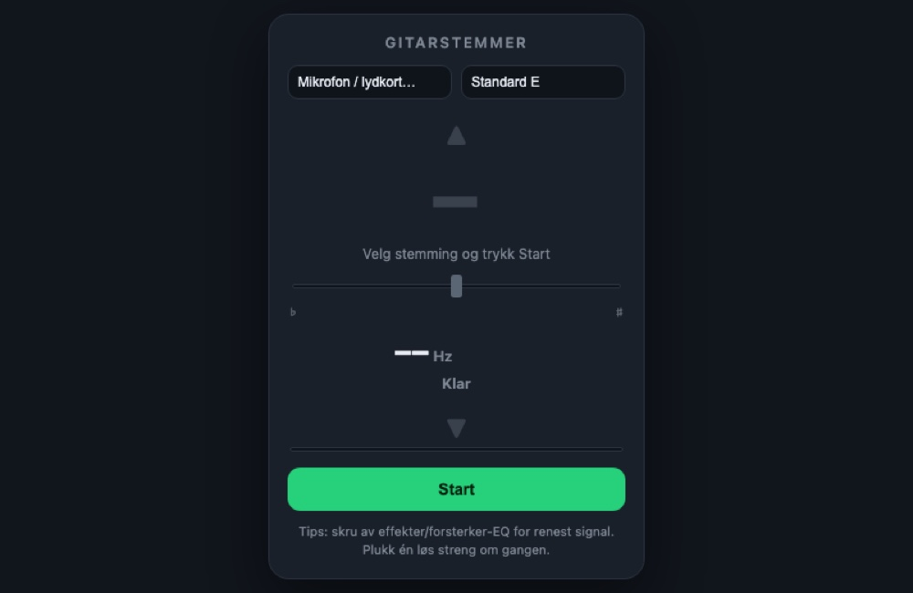
Gitarstemmer
Native macOS-gitarstemmer. SwiftUI + Core Audio, Hz-nøyaktig deteksjon, med farger og piler som sier fra når du er i mål.
Swift, macOS Repo -
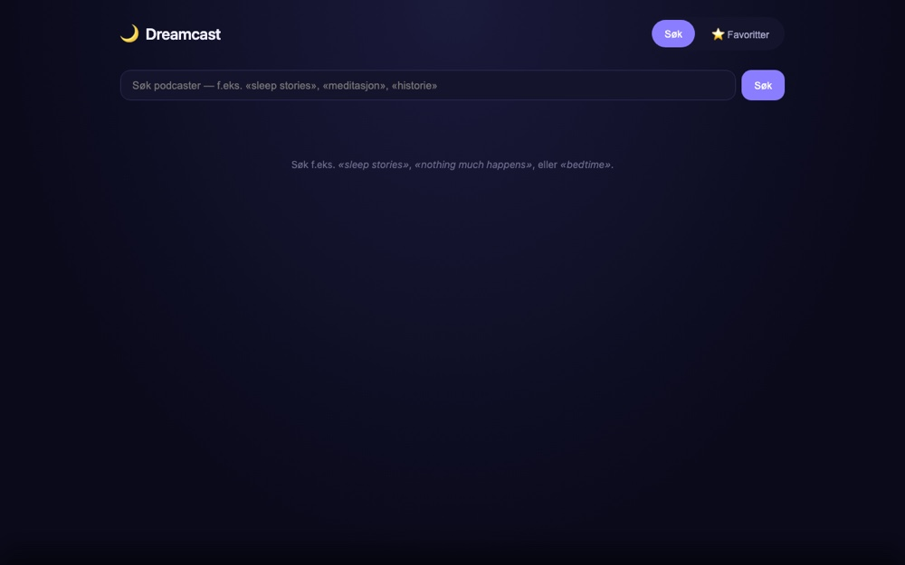
-
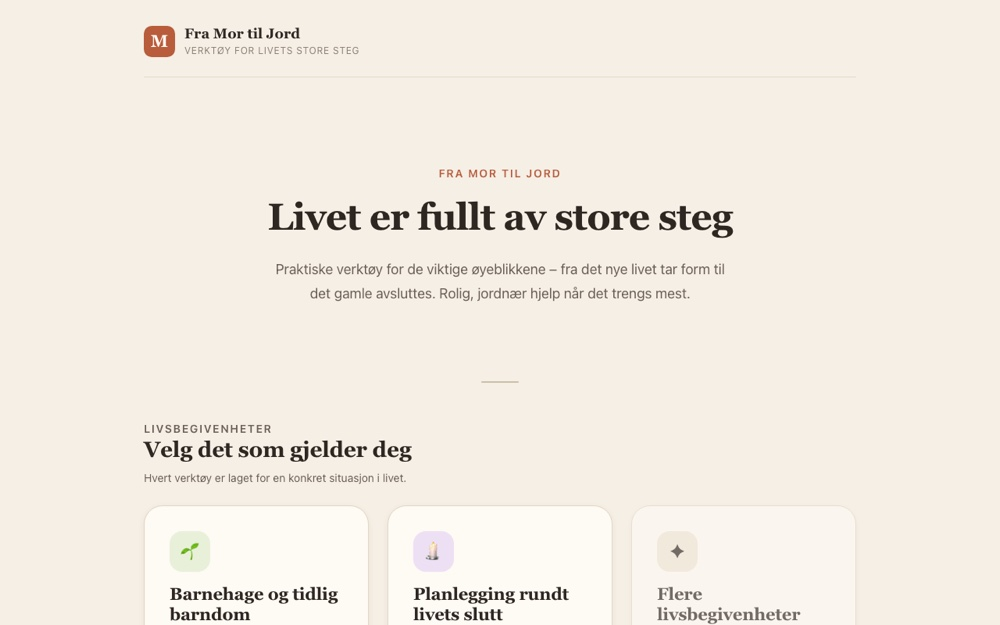
-
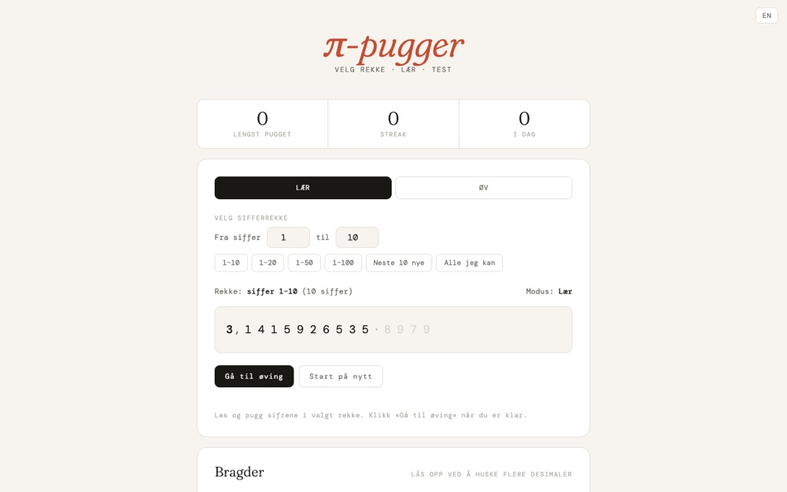
Erfaring
Den seriøse delen. 7+ år med produkt, AI og litt juss på si.
på jobb: voksen. på fritiden: se over.
-
okt 2025 – nå
Manager, Technology Management
Sopra Steria
Prosjektleder i et spesialisert AI-team som leverer skreddersydde og egenutviklede SaaS-løsninger til kunder på tvers av bransjer. Bygde om leveransemodellen fra konsulenttimer til produkt, og eide leveransen ende til ende, fra salg og kontrakt til teknisk leveranse og overlevering.
-
nov 2024 – sep 2025
Lead Product Manager, Gen AI & Emerging Technologies
DNB
Ledet utviklingen av generativ AI for personmarkedet i banken. Koordinerte tverrfaglige team og leverte kundenære digitale tjenester med målbar effekt på engasjement.
-
feb 2020 – nov 2024
Product Manager, Retail Market Digital Channels
DNB
Ansvarlig for «Pengebruk», DNBs verktøy for personlig økonomi, i en periode Europas nest mest brukte PFM-løsning. Optimaliserte porteføljen og ledet veikart og innovasjon som kuttet driftskostnader.
-
mai 2019 – feb 2020
Subject Matter Expert, New Business
DNB
Sikret etterlevelse av regelverk og støttet data scientists i å bruke data effektivt. Innførte praksis for datakvalitet og -forvaltning.
-
aug 2018 – mai 2019
Product Owner, Banking Services
DNB
Utviklet moderne API-er oppå aldrende kjernebanksystemer. Jobbet med sentrale bankfunksjoner som onboarding og AML.
-
2013 – 2018
Utdanning
UiO & Høgskolen i Molde
Bachelor i informasjonsteknologi ved Universitetet i Oslo (Det juridiske fakultet), 2016–2018. Bachelor i samfunnsvitenskap, juss og administrasjon ved Høgskolen i Molde, 2013–2016.
Kontakt
Har du et problem som trenger en løsning, eller en løsning som leter etter et problem? Si fra.